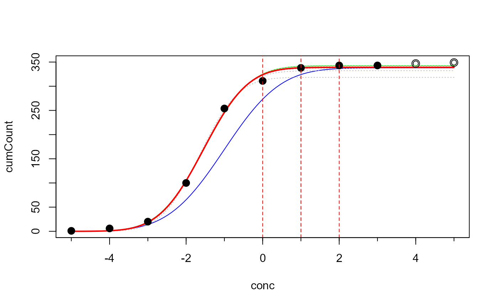

ecoffinder_nls.RdIdentifies the wild-type sub-population by fitting a cumulative normal distribution to subsets of MIC or ID data.
ecoffinder_nls( conc, count, startpar = "mode", concentrations = NA, log2 = TRUE, plot = TRUE )
| conc | concentration of the antibiotic |
|---|---|
| count | raw frequency |
| startpar | start parameters for the nonlinear search, or "mode" resp. "mean" for an automatic determination |
| concentrations | which concentrations are tested |
| log2 | logical determining if conc are log-transformed or not |
| plot | logical, switch visualization on or off |
an object of class abr_ecoffinder-class containing the fitted
parameters and statistics of the final and intermediate fits.
Start values for the nonlinear regression can be automatically
determined with function ecoffinder_startpar.
The default search interval starts one concentration level above the mode resp. mean.
Turnidge, J., Kahlmeter, G., Kronvall, G. (2006) Statistical characterization of bacterial wild-type MIC value distributions and the determination of epidemiological cut-off values. Clin Microbial Infect 12: 418-425 doi: 10.1111/j.1469-0691.2006.01377.x
ecoffinder_startpar for heuristic methods to guess start parameters
ECOFFinder for an interactice shiny app
## discard NA values measured <- na.omit(micdata) ## cumulative plot plot(cumsum(freq) ~ log2(conc), data=measured, type="l")x <- log2(measured$conc) y <- measured$freq ## heuristic start values pstart <- ecoffinder_startpar(x, y) pstart#> mean sd K #> -1.002944 1.150871 338.000000## nonlinear regression p <- ecoffinder_nls(x, y, pstart)#> Search concentration: 0 1 2 3 4 5#> #> Formula: cumCount ~ fnorm(conc, mean, sd, K) #> #> Parameters: #> Estimate Std. Error t value Pr(>|t|) #> mean -1.54565 0.04257 -36.31 2.91e-08 *** #> sd 0.91042 0.05768 15.78 4.10e-06 *** #> K 339.02677 4.00460 84.66 1.83e-10 *** #> --- #> Signif. codes: 0 '***' 0.001 '**' 0.01 '*' 0.05 '.' 0.1 ' ' 1 #> #> Residual standard error: 7.179 on 6 degrees of freedom #> #> Number of iterations to convergence: 8 #> Achieved convergence tolerance: 8.809e-06 #> #> --- #> ECOFF quantiles: #> Q_0.95 Q_0.975 Q_0.99 Q_0.999 #> 1 2 2 4